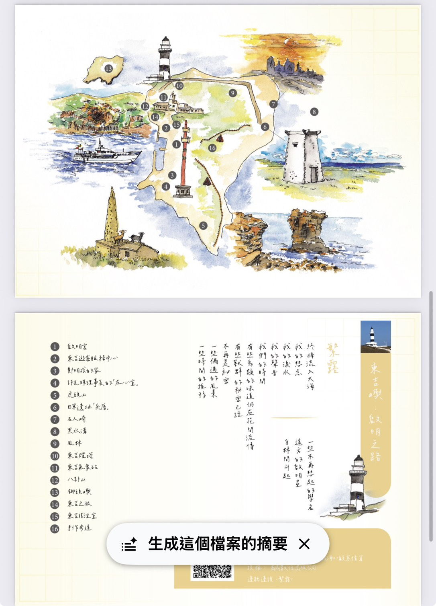

關於本書
《樂園時代》不僅是一本書，更是一場感官的遠征。顧蕙倩博士透過細膩的文字，帶領讀者走入臺灣的山、城、海。本次分享會特別聚焦澎湖「南方四島」，結合褒歌創作與譜曲合作，讓您現場感受文字轉化為旋律的魔力。
- 聽顧顧分享澎湖褒歌
- 文學創作與譜曲的心路歷程
- 商鼎數位出版 精心呈現

「聽見，島嶼的聲音」
南方四島：啟程與之路

啟明之路 ‧ 〈繁露〉
東吉嶼

寂靜之路 ‧ 〈雨露〉
西吉嶼

手作之路 ‧ 〈朝露〉
東嶼坪

多漢之路 ‧ 〈夕露〉